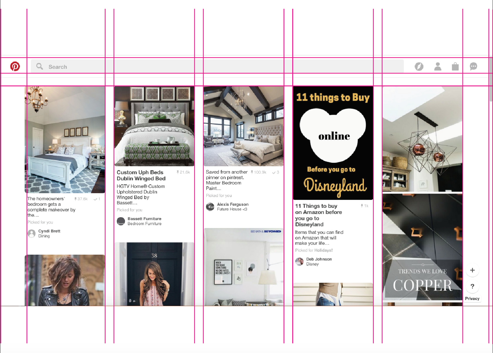

Pinterest's goal is come up with new ways to bring ideas to life, help people become more creative, and save ideas around the web.
Pinterest WebsiteThe company I chose to research was Pinterest, a website which allows the exploration of creative ideas, and now shopping. It allows people to connect with other websites based off of the images you like. Exploring through the website, I realised that Pinterest has a lot of interesting things to offer, but because many icons are hidden, and or not noticeable, people don’t use them as much. Or maybe, Pinterest didn’t want to give importance to certain ascpects of it.
- The home page has a collection of things that I have pinned throughout the years, and the posts I liked at the bottom.
- Automatically, on the home page, Pinterest already filters I might like, or suggests things for me which I don’t always agree with. Because I pinned a couple of images of workout routines, it automatically assumes, I like to workout.
- Then, I was curious about the chat bubble on the top right hand side and discovered the notifications section, where people pinned some of the things that I had in my archive, and on the right, I noticed a messaging spot. I never used it and wanted to know if it works. So I decided to message my mom.
- Some of the problems I noticed is that many people can pin, share, and like posts by other people. And it becomes redundent.


